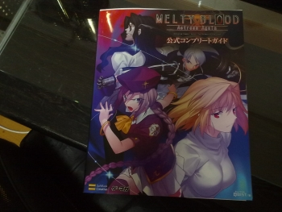
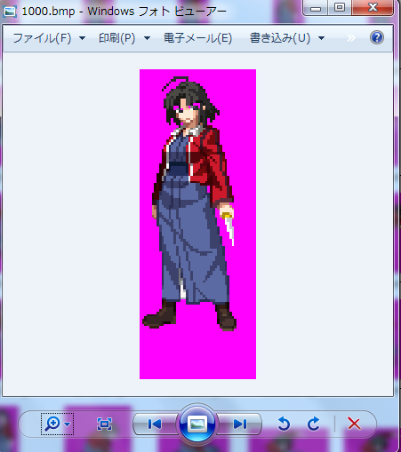
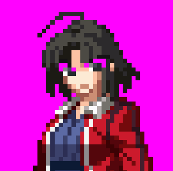
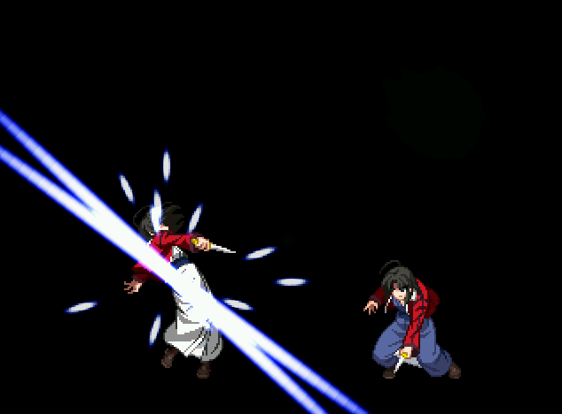
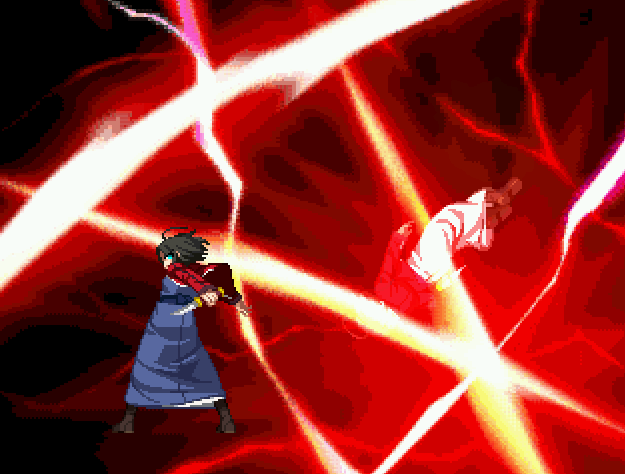
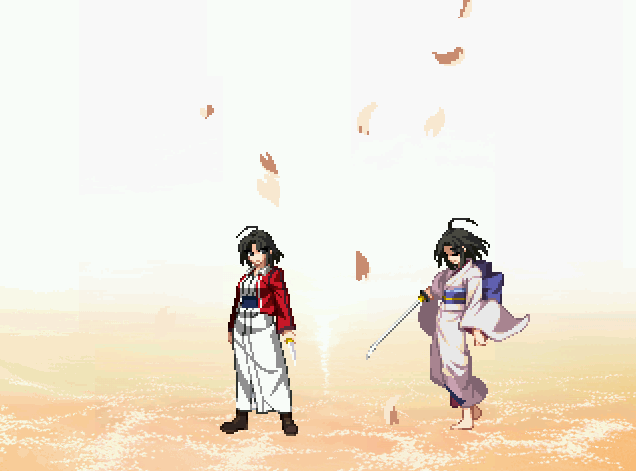

＜まえがき＞
MBAAより両儀式たんです。ぺろぺろ。
D4ロック製作よりはや一ヶ月、MBAAにゲスト出演すると聞いて飛んできました。
原作となる空の境界という小説は発売当初に買い付け、4,5回読んだ。
型月作品の中で最も好きなキャラクターだ。
まぁ、ゲームのMBAA自体は一度もやったことないがね。
＜しすてむをしるお＞
まぁぶっちゃけゲームやったことないからシステムなんか知らん。
だが、知らんと当然作れない。
そこでユーザーどもッ！貴様らがどんなに期待していようと関係のない方法を思いついたッ！
（ズゥラァ！）

読んでみた最初の感想↓
システム多っ！！１１両儀式、技多っ！！！１１１
カウンター、MCゲージ関連動作、インバリッド表示、サーキットスパークetcetc…。
両儀式自身もとんでもなく技が多いぞ…。
正直まだsff一枚も登録してないのに、この時点で泣き入ってきた。
しかも、極めつけは何かタイプというものがあるらしいではないか承太郎。
・・・フムフム、なるほど。
タイプによって通常技レベルでモーションが違ったり、同じ技でもフレーム数や持続時間が異なる、と…。
・・・それって3キャラ分作るようなものじゃないか？という考えが頭を過ぎったがあえて考えないことにした。
＜前準備段階で直死＞
この時点で正直、もう辞めようよパトラッシュという脳内ヴォイスが聞こえていたが、
それを振り切ってsffにかかる。
sffは友人に貰っていたので持っている。
聞くところによると、西側とかsp roomとかいうところにあるらしい。詳細不明。
でもどうも、友人もそっから持ってきたらしい。
さて、登録するか。何をするにしてもまず画像がないと話にならん。
もらった画像フォルダを見ると、まぁあるわあるわ、ざっと見てエフェ込み1500枚といったところか。
KOFキャラの3〜5倍の量である。
はぁ・・・ため息が出るわｗ
趣味でやってるのに、何でそんな嫌々やるの？と思われるかもしれない。
だが、製作者には分かるだろうがいくら好きなキャラでも、長い長いキャラ製作というものにおいて
やりたくないことや嫌な事はあるんだよ。
ちなみに、俺の場合は
sff登録前の画像確認 （また長いキャラ製作の仕事が始まるお・・・）
↓
基本動作、食らい動作登録およびair,cns作成 （しぬお。生死の境目）
↓
通常技登録およびair,cns製作 （あうあうあー）
↓
必殺技登録およ(ry （少し息を吹き返す）
↓
超必登録(ry （少しキャラを楽しみだす）
↓
コンボができるようにする （うはｗｗｗ）
↓
おかしな箇所微調整 （コンボや技が出せるようになってるので、それほど苦にならない）
↓
完成して遊ぶ （おまｗｗｗｗｗおｗｗｗｗｗｗｗｗｗｗｗまｗｗｗｗｗｗｗｗｗｗｗｗｗテラ楽しすｗｗｗｗｗｗｗｗｗ）
今回も完成したキャラで遊ぶ自身の姿を夢見て・・・レッツ・・・スタートっ・・・！。（←泣いてる）
まずは切り出し、そして減色とパレット統合。
この辺は問題ない。ちゃっちゃと済ませるか。
3分で完了。
よし、あとはこの画像をsffに登録・・・
ん？

あれ？

眉毛の色おかしくね・・・？
パレット情報を見てみる。
R:255 G:0 B:255
・・・・。
えっと、背景色は、と・・・
R:255 G:0 B:255
直死・・・七夜！！！
やってられるかｗｗｗｗｗｗｗｗｗｗｗｗｗｗ
1500枚はエフェ込みでの枚数だが、本体画像だけでも1000越えだぞｗｗｗｗｗｗｗｗｗｗｗ
さすがにワロタｗｗｗｗｗｗｗｗｗｗｗｗｗｗｗ
こんなキャラ作ってられるかよｗｗｗｗｗｗｗｗｗｗｗｗｗｗｗｗｗｗｗ
・・・・・
・・・・・・・・・・・
・・・・・・・・・・・・・・・・・・・・・・・・
やりゃあいいんだろやりゃああああああああよぉぉぉぉぉぉぉぉ！！！！！（桜座様風に）
＜背景と同色の箇所を別色で塗る＞
ゾンビが作業中です。しばらくお待ちください。
＜基本動作と食らいアニメ登録、通常技を作成＞
もはや何が自分をここまで駆り立てるのか自分自身でも良く分からなくなってきた俺に死角はなかった。
基本動作と食らいアニメ登録完了。おっと、ヨダレが…。
続いて通常技。
式の通常技はリーチが長い。単純に剣閃に攻撃判定があるから、というのもあるが
大きく体を突き出して横薙ぎに斬ったりする技や、片足を軸に上半身だけ乗り出して斬りつけるなど
特殊な通常技が多い。
ので、ここはposaddを使って制御。
cns見てもらえばわかるけど、至る所にposaddかましている。
相手との距離が近いか否かを判定し、近い場合はposaddしないなどの小細工もした。
これしないと相手をすり抜けてしまう。
一番顕著なのが、2C。
これ、画面の７割は攻撃判定出てるんじゃないかってくらい広大な制圧範囲を持つ技。
あとは6C。
これ未だに意味が良く分からん。
一応作ってるけど、これでいいのかな？
(C-1時点での)俺の認識では、
・地上ヒット時のみ、アニメが変化して相手の裏に回る。
・空中の相手に当たる、または攻撃がヒットしない場合はヒット時とは違うアニメになりその場で回転するような動作をする。
ということらしい。
しかも不利フレームがでかいので裏に回っても意味がないという。
どうやらコンボパーツらしいね。
2C→6C→地上隠しナイフ などに使うとのこと。そーなんだー。
続いてBE技。
作成完了、さてエフェクトを・・・
・・・・。
エフェクト画像がなかった。
＜必殺技を作成＞
きたよこれ・・・。
技数、多いのなんのって・・・。
同じAAからの新キャラ、リーズバイフェなんか3つ4つしかないのに。
ちなみに、当初はリーズを作る予定でした。
KOFアレンジしてる人や他にも作ってる人がいたから、それを使わせてもらおうと思ってやめた。
で、式にした。
全ての技とそれに伴い作ったステート数↓
双ね鐘楼(A) 1000
双ね鐘楼(B) 1010
┗双ね鐘楼 追加技1 1050
┗双ね鐘楼 追加技2(A) 1100
┗双ね鐘楼 追加技2(B) 1110
┗双ね鐘楼 追加技2(C) 1120
┗双ね鐘楼 追加技3 1150
┗双ね鐘楼 追加技4 1200
鐘楼・清姫通し 1250
玻璃の月(A) 1300
玻璃の月(B) 1310
玻璃の月(EX) 1320
虎落笛(A)(ダッシュ) 1400
虎落笛(A)(攻撃) 1401
虎落笛(A)(BE) 1402
虎落笛(A)(停止) 1403
虎落笛(B)(ダッシュ) 1410
虎落笛(B)(攻撃) 1411
虎落笛(B)(BE) 1412
虎落笛(B)(停止) 1403
忌み斬り虎落 1420
忌み斬り虎落(停止) 1421
隠しナイフ（地上）
┗隠しナイフ（A/分岐元） 1500
┗隠しナイフ（A/通常） 1501
┗隠しナイフ（A/BE） 1502
┗隠しナイフ（B/分岐元） 1510
┗隠しナイフ（B/通常） 1511
┗隠しナイフ（B/BE） 1512
┗隠しナイフ（EX） 1520
隠しナイフ（空中）
┗隠しナイフ（A） 1530
┗隠しナイフ（B） 1540
┗隠しナイフ（EX） 1550
隠しナイフ（拾い） 1560
無明の月(A/発動) 1600
無明の月(A/空中) 1601
無明の月(A/着地) 1602
無明の月(B/発動) 1610
無明の月(B/空中) 1611
無明の月(B/着地) 1612
無明の月(EX/発動) 1620
無明の月(EX/空中) 1621
無明の月(EX/着地) 1622
淘の振り袖 1700
玻璃の月舎迦(A/発動) 1800
玻璃の月舎迦(A/攻撃) 1801
玻璃の月舎迦(A/着地) 1802
玻璃の月舎迦(B/発動) 1810
玻璃の月舎迦(B/攻撃) 1811
玻璃の月舎迦(B/着地) 1812
玻璃の月舎迦(EX/発動) 1820
玻璃の月舎迦(EX/攻撃) 1821
玻璃の月舎迦(EX/着地) 1822
転猫(A) 1900
転猫(A 着地) 1901
転猫(B) 1910
転猫(B 着地) 1911
転猫(EX) 1920
転猫(EX 着地) 1921
無我識 心空妙有(発動) 2000
┗無我識 心空妙有 追加技1 2010
┗無我識 心空妙有 追加技2 2020
┗無我識 心空妙有 追加技3 2030
┗無我識 心空妙有 追加技4 2040
┗無我識 心空妙有 追加技5 2050
┗無我識 心空妙有 追加技6 2060
死の魔眼 五景崩落 4700
直死の魔眼 七景終落 4750
無垢識 空の境界 4800
システムとヘルパー抜き、完全に単純な技だけでこれだけのステート使ったのは、これが初めてだ。
AとかBのボタンでも、KOFみたいに威力が違うとかじゃなくて発生や持続時間や有利不利フレーム数まで
違うのがほとんどで、同じ技でも出すボタンによってほぼ別物になっている。
派生技なんかも、どこから派生したのか(要するにprevstate元)によって硬直が違ってたりするらしい。
再現したけど、いやぁマジでメンドくさかったよ。
あと苦労したというか、ちょっと精神的にあまりよくないのが無明の月と玻璃の月舎迦の空中軌道。
これいいのかね？
50回くらい動画見て動き調整したけど、動画だとスカッたとき、ようするにヒットストップが効いていないの動きが
確認出来なかった。
ヒットさせてる動きは動画で見れたので、それっぽくできたとは思うけどスカッたときの落下速度や
攻撃判定発生中の軌道がどうなのか、かなり心配。
ちなみに、個人的に好きなのは清姫通し。

これヤバい。。カッコいい。
技の動きもだけど、それよりもなによりもまーや様のボイスが最高すぎる。
「死が・・・俺の前に立つな！」と「二拍・・・一拍子！」
前者は劇場版「空の境界」のセリフ、後者は何言ってるかワカンネ。
でもなんか、劇場版とこのゲームの声って何か違うよね？
同じまーや様だし、上手い下手とかそういうのじゃなくて声のトーンとか。
こっちのが明るい気がする。それにしても本当に素敵なボイスだ・・・。
まーや様にこんな声で罵られたい。
そして必殺技半分作った時点でsffが10M超えた。
デカイ画像もあるし、エフェクト多いし、汚いし、まぁ仕方がないだろう。
いつもは何となく精神衛生上よろしくないのでやらない、エフェクト系画像のパレット統合もした。
＜AD/AADを作る＞

アークドライブとアナザーアークドライブ。
技名カッコいい。
どちらも直死の魔眼を使った攻撃で、五景崩落と七景終落。
で、また
エフェクト画像がないと。
まぁ五景の方だけで、七景はあるから最悪ではない、か…。
つーかこの技強い・・・。
至近距離と遠距離で動作が違う。
遠距離だと突進して死の線を斬るんだが、近距離だと死の線を補足して斬る。
死の線を目視で補足した後に斬りに行くので、補足されたらガード出来ない。
五景は死の線補足までにかかる時間は16フレーム、七景は2フレーム。
更に(死の線の補足は無理らしいが)、ダウンした相手にもヒットする。
七景なら死の線補足判定が2フレなのでコンボにも組み込めるらしい。
まさに直死。
＜LAを作る＞

無垢識 空の境界。
根源の一部である「」登場。
発生1フレ全画面判定という、まさにラストアークな技。
というか、かっこよすぎて吹いたｗ
ヒット時は相手を固定し、日本刀「無銘 九字兼定」で存在自体を直死します。
固定ダメージ700という法外な攻撃力を誇る。
更に原作ではシステム的な一部の条件下で即死だけど、mugenでそれは無理なので
「相手のパワーゲージがMAXの場合は即死」とした。
あと、こういうたけの長い技はフレーム調整が難しいんだ。
カットインや他のオブジェクト、相手の動作などとこちらの動作の統制をとりつつよどみなく動かす必要があるから、
何度も何度も動画を見てフレーム調整して、を繰り返した。フェードイン/フェードアウトの時間、タイミング。
全ての技の中で一番拘り、大変だった技でもあるので頑張ったのだがどうだろうか。
イグニスのブルータルゴッドなんかも見る度に、ああ…これ作るのマジに大変だったろうな…製作者様お疲れ様です…といつも思うｗ
ちなみにこの「」さん、根源の一部でいわゆる神様なので世界を新たに作れたりします(なぜ劇場版は省略したし)。
公式見解でもMB、空の境界、DDDとか全ての月作品中でアルクに次いで2番目に強いと公言しちゃってるので
どちらかというと姫アルク寄りの強さを持ってる事にもちょっと納得してしまうｗ
まぁざっとこんなとこだけど、今回はさすがにかなり過酷だった。
1000枚以上のドット塗り、総合的な枚数の多さ、原作を知らないが故の動画から動作拾い作業・・・。
この暇文はC-1時点で書いてるので、まだシステム的な面での残作業が多々あるけど、とりあえずMCゲージ回りは
終わっているので、あとはカウンターやインバリッドの条件を設定して表示させたり受け身可能時間の設定に式として
組み込むだけなので、条件さえ分かれば実装にはそれほど時間はかからないはず。
フルムーンとハーフムーンがどうなるか・・・の方が不安はでかいな。
ま、今はクレセントだけでも完成して公開できただけでもよしとするか。
今後は報告のあったバグ取りを優先、その後システム完備、最後に残り2つのスタイルの搭載と進めて行く予定。
とりあえずはこれで一区切り。
最後に、MCゲージ画像の使用許可を出してくれたDOBUROKU氏、原作式について色々教えてくれたお家氏、
まーや様ボイスを加工してやる気をうｐさせてくれた人に感謝。
おとなしくお家氏が作ってる式が完成するのを待てばよかったとちょっとだけ思うお。